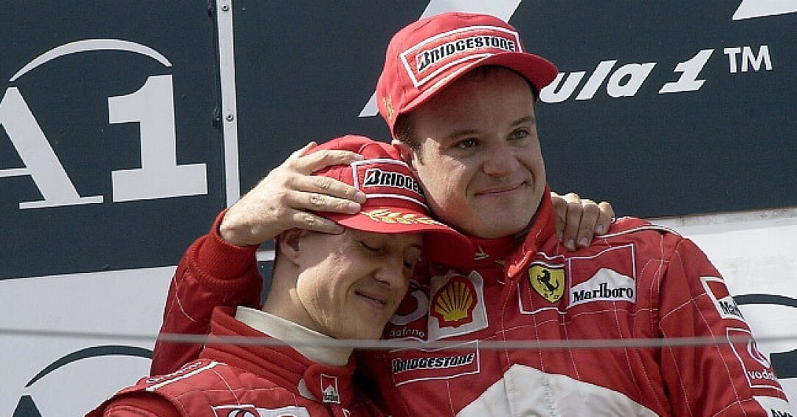
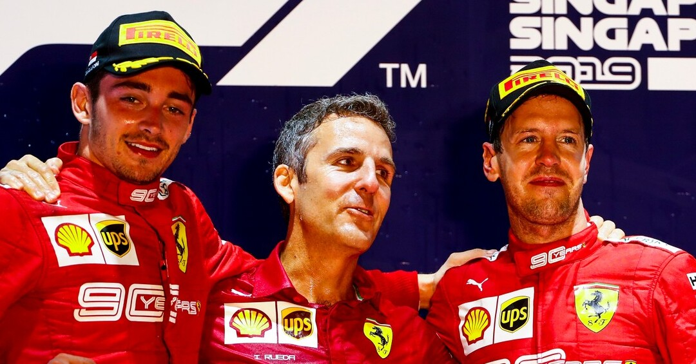
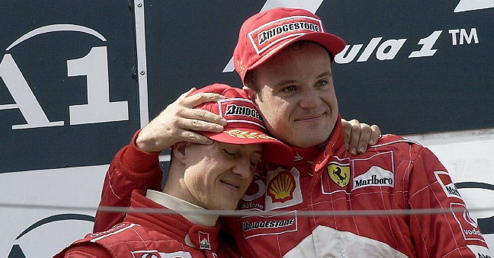
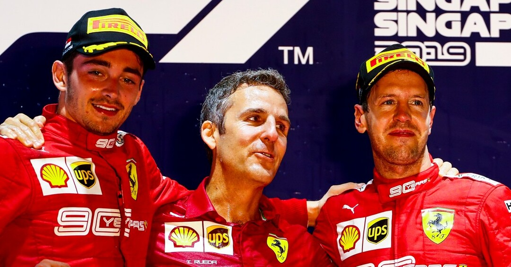

Scuderia Ferrari
Történelmük
Kezdetek
A Ferrari már a kezdetektől jelen volt a Forma 1-ben, az első szezon második futamán Monacoban debütáltak. Az első két évet az Alfa Romeo dominálta de ők 1951-ben kiléptek a sportból, így az uralmat a Ferrari vette át. Alberto Ascari volt a Ferrari első világbajnoka, aki tragikusan a versenypályán hunyt el 1955-ben.

Schumacher éra
A Ferrari 1996-ban szerződtette le az akkori kétszeres világbajnok Michael Schumachert. Schumacherrel együtt néhány szakember is csatlakozott a Ferrarihoz, nélkülük nem jöhetett volna létre a Schumacher éra. Az első évek nem hozták a várt eredményeket, de 2000-től nem volt megállás. Schumacher 5 világbajnokságot nyert a Ferrarival. (2000, 2001, 2002, 2003, 2004)
Ferrari eredményei
A Ferrari a legeredményesebb konstrukció a Forma1 történelmében. A vörösök szinte az összes
statisztikát uralják, bár ez nagyban köszönhető annak, hogy ők vannak a sportban a legtöbb
ideje.
Néhány statisztika látható: (Az adatok a statisztikához 2021. 11. 28-án
relevánsak.)
- Versenyek amin indultak: 1028
- Dobogók: 777
- Megtett versenykörök: 116 311
- Győzelmek: 238
- Pole pozíció: 230
- Kettős győzelmek: 84
 



Táblázat a VB címekről
| Red Bull | Mercedes | Ferrari | McLaren | Williams | |
| Konstruktőri VB cím | 4 | 7 | 16 | 8 | 12 |
| Egyéni VB cím | 4 | 9 | 15 | 12 | 7 |